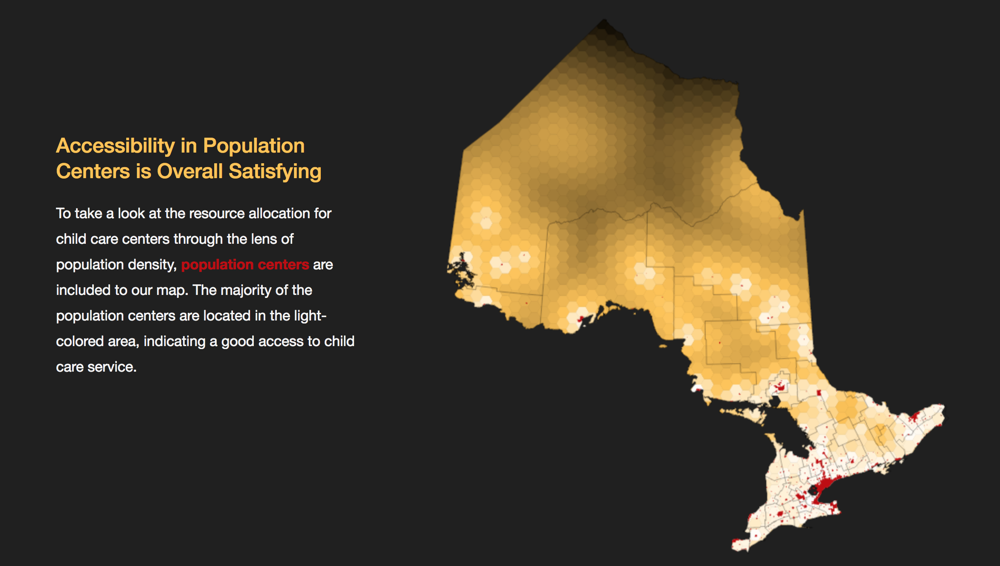

Hi, I'm Chen Wang.
I am an incoming content editor intern at the Globe and Mail in Toronto, Canada.
Before that, I was a data journalism student at the Lede Program, Columbia Journalism School.
I know some coding, some journalism, and some business.
It's going to be fun....!
-

How Hard Is It to Enroll in A Child Care in Ontario?
Tools: Python, d3.js, vue.js, scrolling storytelling, web scraping, QGIS
Apr. 17, 2018
-

In the country with no mandatory paid maternity leave, there are companies caring more.
Tools: Python, d3.js, web scraping
Nov. 6, 2017
-

The 2016 'Sunshine List': How Much did Ontario Public Sectors Pay Their Employees?
Tools: Python, d3.js, OpenRefine
Oct. 21, 2017
-
ICO Funding Remains Hot in September, Widening its Lead ahead of Venture Capital Investments
Tools: Python, Illustrator
Sep. 17, 2017
-
Tools: Python, Illustrator, Photoshop
Aug. 17, 2017
-

How Long Would You Need to Wait for a Liver Transplantation? It Could be 1136 Days.
Tools: Python, Illustrator
Aug. 12, 2017
-

Tools: Python, Web Scraping, Illustrator
Jul. 28, 2017
-

Infrastructure In the Secondary Cities of Canada
Tools: Python, JSON, Geopandas, Lefleat, JavaScript
Jul. 7, 2017